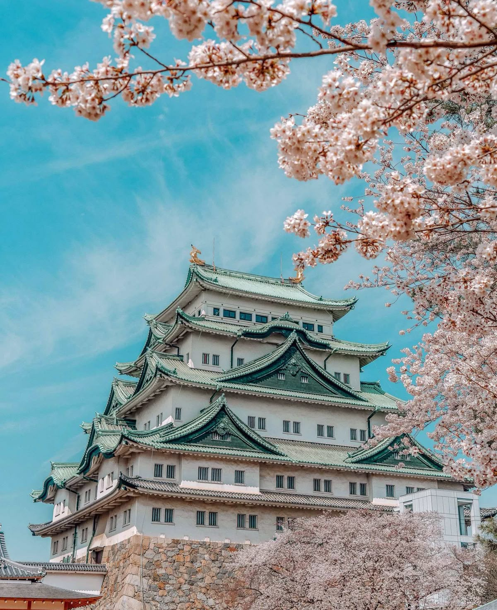
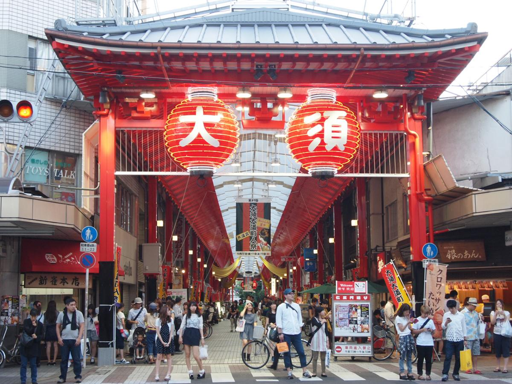
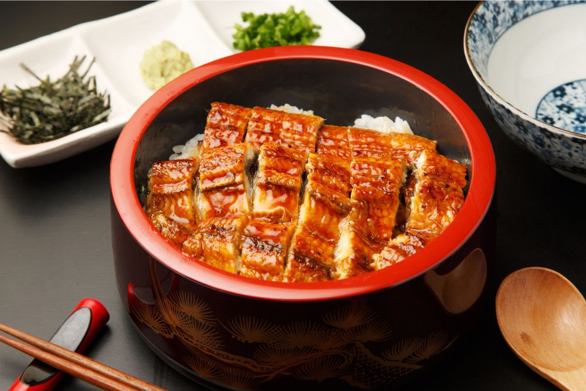

WORLD HERITAGE
名古屋城
名古屋城始建於 1615 年，由統一日本的將軍德川家康下令建造，是江戶時代初期最具代表性的城郭之一。作為德川政權在中部地區的核心據點，名古屋城不僅象徵著政治權威，也展現了當時最高水準的城郭建築技術。 城堡最具代表性的標誌，莫過於裝飾於大天守屋脊兩端、以黃金打造的「金鯱（鴟吻）」，在陽光照耀下熠熠生輝，成為名古屋最鮮明的城市象徵。
-
金鯱（Kinshachi） 象徵名古屋城的黃金鯱吻，裝飾於大天守屋脊兩端。以金箔包覆的造型不僅展現德川政權的權威，也被視為守護城堡免於火災的吉祥象徵，成為名古屋最具代表性的城市意象。
-
本丸御殿（Honmaru Palace） 名古屋城最華麗的空間，曾是將軍與大名接待賓客的重要場所。御殿內部以精緻的木作工法與金碧輝煌的障壁畫聞名，經過細緻復原後，重現江戶時代武家文化的極致美學。
-
城郭與石垣防禦系統 名古屋城擁有規模龐大的石垣與護城河，兼具美觀與實戰防禦功能。其城郭配置被視為江戶初期城堡設計的典範，展現當時高度成熟的軍事與建築技術。

DOWNTOWN
大須商店街
擁有 400 年歷史的商店街，融合了古老寺院、動漫文化與各國美食，是感受名古屋活力最好的地方，這裡是名古屋最熱鬧的「下町」。穿過巨大的紅燈籠大門，彷彿進入了一個沒有邊界的時空迷宮。從歷史悠久的大須觀音寺，到最尖端的動漫次文化，以及散發著誘人香氣的各國街頭美食，大須以其包容萬象的姿態，展現出名古屋最真實、最蓬勃的日常生命力。

FOOD
三溢之味：鰻魚飯的極致儀式
在名古屋，品嚐鰻魚飯是一場與時間對話的儀式。嚴選豐腴鰻魚，經由職人以炭火反覆翻烤至表皮微焦酥脆，內裡柔軟多汁。從純粹品嚐原味、加入清爽藥味，到最後注入特製高湯的茶泡飯， 「三種吃法」讓每一次咀嚼都如同音符般，在舌尖交織出多層次的味覺變奏曲。
